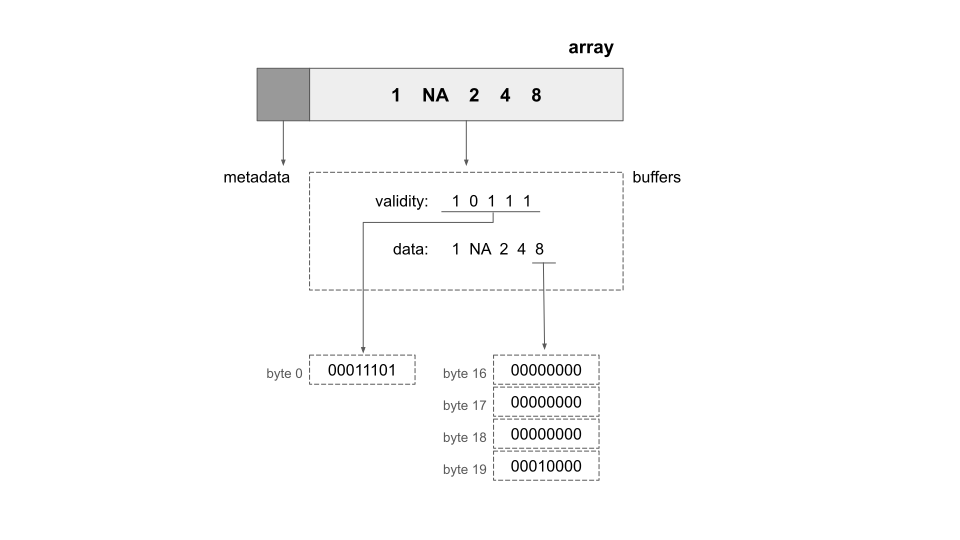
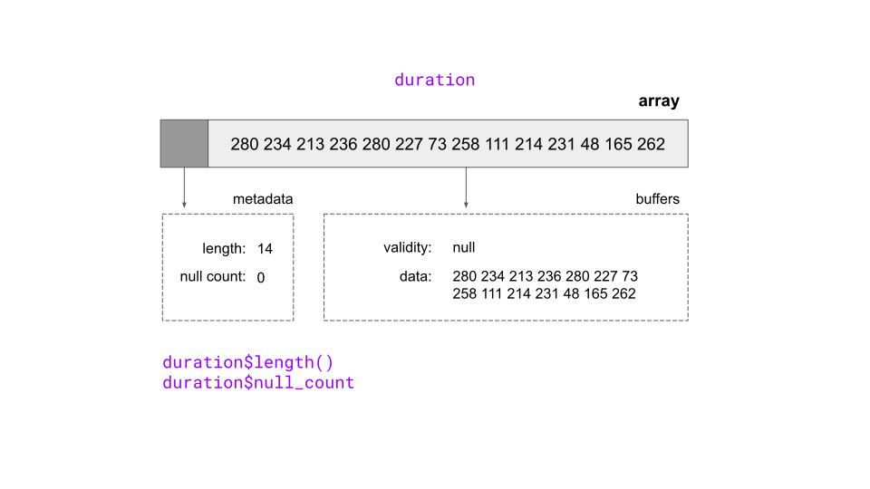
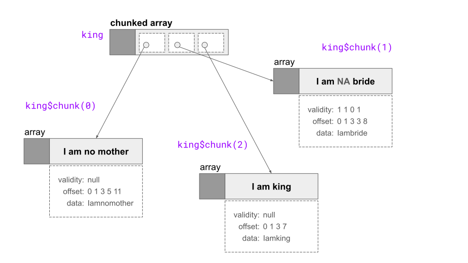
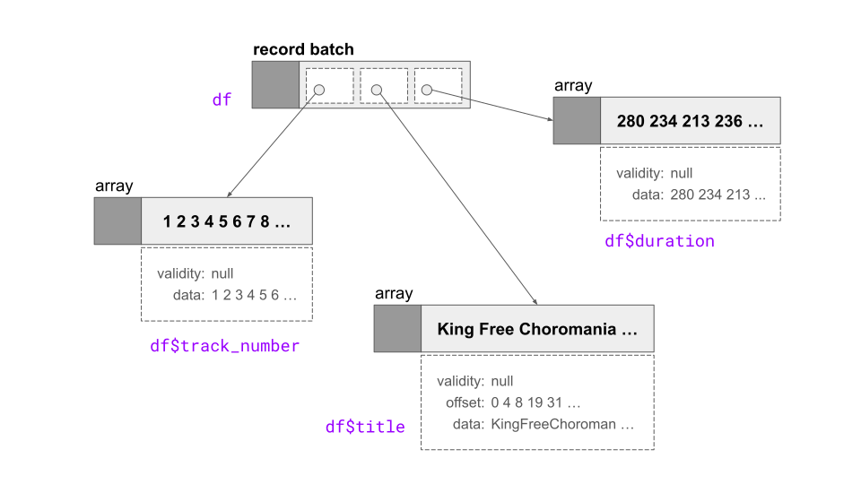
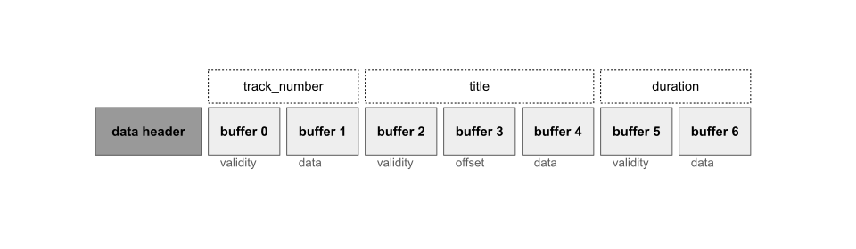
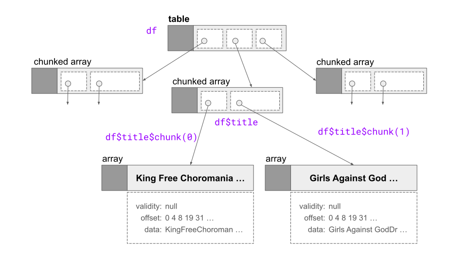

![]()
library(arrow)
library(spotifyr)
library(dplyr)
library(tibble)
options(scipen = 20)My catholic taste in the devil
All gilded and golden, yes, I’m your girl
Hell, if it glitters, I’m going
– Heaven is Here, Florence + The Machine
If you’ve made the life choice to become a developer advocate with a focus on Apache Arrow, you’re probably not unfamiliar with masochism.
Don’t believe me? Let’s consider my past choices:
- My first attempt to write about the topic didn’t even talk about Arrow: the post was a descent into the madness of data serialisation in R and the RDS format. I don’t think I need to explain the pain that one involved.
- My second attempt went a little better, and I managed to write a few thousand words on getting started with Apache Arrow for the R user. Much of that post was spent on answering very technical questions like “what is this?” and “why do I care?” These are excellent questions to answer, but nevertheless it was a learning experience for me, shall we say? There were headaches.
- My third attempt talked about how the arrow package supplies dplyr bindings, allowing R to perform data manipulation on Arrow data using familiar dplyr syntax. It wasn’t a bad post to be honest, but I did go down a very strange path with all the Magicians gifs and as anyone familiar with the series knows, the magic comes from pain.
- As for my fourth attempt, the data types in Arrow and R post… look, if you’ve ever had a secret desire to see what happens when I am reduced to tears and wailing at the horrors of the world and of IEEE 754, then oh my yes, this is the extremely long blog post for you.
I don’t regret any of these choices, particularly the fact that they have helped keep me gainfully employed, but there’s no denying the fact that a lot of blood and tears have been spilled in the endeavour.
In any case, what I am trying to convey to you, dear reader, is that – setting aside the superficial trappings of whips and chains and the various other devices that propelled E. L. James to great fortune – I am intimately acquainted with pain. It is important to me that you understand this, and that when I mention the pain I encountered when trying to learn how the arrow R package works, I am not using the term lightly.
So let talk about my latest pain point, shall we?
Data objects
Here’s the thing that has been giving me grief. Suppose you are an R user who is new to this whole Apache Arrow business. You’ve installed the arrow package, and you’re now reading the Get Started page in the hopes that you too will be able to, well, get started. When you visit this page, one of the very first things you encounter is a table listing a variety of data structures used by Arrow. Specifically, the table tells you that Arrow has classes for zero-dimensional data (scalars), one-dimensional data (arrays and other vector-like data), and two-dimensional data (tabular or data frame-like data). It shows you that…
…actually, you know what? Instead of describing it, let’s take a look at the actual table. Here’s what it tells you about the hierarchy of data structures in arrow:
| Dim | Class | Description | How to create an instance |
|---|---|---|---|
| 0 | Scalar |
single value and its DataType |
Scalar$create(value, type) |
| 1 | Array |
vector of values and its DataType |
Array$create(vector, type) |
| 1 | ChunkedArray |
vectors of values and their DataType |
ChunkedArray$create(..., type) or alias chunked_array(..., type) |
| 2 | RecordBatch |
list of Arrays with a Schema |
RecordBatch$create(...) or alias record_batch(...) |
| 2 | Table |
list of ChunkedArray with a Schema |
Table$create(...), alias arrow_table(...), or arrow::read_*(file, as_data_frame = FALSE) |
| 2 | Dataset |
list of Tables with the same Schema |
Dataset$create(sources, schema) or alias open_dataset(sources, schema) |
Now, perhaps there are some devilishly clever R users who can look at this table and immediately decode all its mysteries. But I will be honest with you, and confess that I am not one of these people. When I first started learning Arrow, I had no idea what any of this meant. This whole table was completely intimidating. I looked at it and thoughts roughly along the following lines went through my head:
Oh… f**k me. I’m completely out of my depth, I am too stupid to understand any of this. I should quit now and find a new job before everyone realises I’m a total fraud. They made a terrible mistake hiring me and… blah blah blah
The self-pity went on for a while and the names I called myself became quite inappropriate for a family restaurant, but I’ll be kind and spare you the tiresome details.
Eventually I remembered that this is my impostor syndrome talking and that I am in fact quite good at learning technical concepts. The problem I’m encountering here is that this table isn’t self-explanatory, and isn’t accompanied by the explanatory scaffolding that helps new users orient themselves. That’s a documentation issue, not a user problem. At a later point someone1 might need to add a few explanatory paragraphs and probably a vignette to ensure that new Arrow users don’t get confused at this point, but for now let’s see if we can’t unpack it here?
Looking at this table, a new user might have some very reasonable questions. What exactly is a ChunkedArray and how is it different from an Array? Why are these necessary as distinct concepts? While we are at it, what is a RecordBatch, a Table and a Dataset, and what makes them different from one another? Unless someone takes the time to explain it all to you, it does look like Arrow is unnecessarily complicated, doesn’t it? These are core concepts in Arrow, but new users don’t know what they are yet!
In short, the time has come to tell the story behind this table. With that in mind, I’ll go through this table row by row and talk about what each line actually means.2
Adventure!
Romance!
Drama!
Joy!
I am absolutely not going to deliver any of those things, but hopefully this will be useful.
Scalars
Let’s start with scalars. A scalar object is simply a single value, that can be of any type. It might be an integer, a string, a timestamp, or any of the different data types that Arrow supports. I won’t talk about the different types in this post because I already wrote an extremely long post on that topic. For the current purposes, what matters is that a scalar is one value. It is “zero dimensional”. All higher order data structures are built on top of scalars, so they are in some sense fundamental, but there is not much I need to say about them for this post. For the record though, you can create a scalar using Scalar$create():
Scalar$create("hi")Scalar
hiOh the excitement. I can barely contain myself.
Arrays
All the gods have been domesticated
And heaven is now overrated
– Cassandra, Florence + The Machine
Okay, so scalars aren’t very interesting for the purposes of this post. Let’s turn our attention to arrays next. An array is roughly analogous to a vector in R, and the arrow package is written in a way that allows you to interact with Arrow arrays in ways that feel familiar to R users.
I can create an array using Array$create():
arr <- Array$create(c("hello", "cruel", "world"))
arrArray
<string>
[
"hello",
"cruel",
"world"
]I can create a subset of an array using square brackets:
arr[2:3]Array
<string>
[
"cruel",
"world"
]Notice that I used 2:3 here to extract the 2nd and 3rd elements of the array. Unlike R, Arrow uses zero-based indexing, so if I were writing this using “Arrow native” code, the relevant subset would be 1:2. However, as a general principle, arrow tries to make Arrow data structures behave like R native objects. The design principle here is that you should be able to use your usual R code to manipulate Arrow data objects, without needing to think too much about the Arrow implementation.
I’m stressing the principle now because later in this post I am going to violate it!
Because one of the other things arrow does is expose a low-level interface to Arrow. You don’t need to use this (and in general you don’t really need to), but it’s there if you want it, and because this post explores the R/Arrow interface I am going to use it sometimes. When that happens, you’ll start to see zero-based indexing appear! I promise I will signpost this every time it happens so you aren’t caught unawares.
Structure of arrays
Anyway, as I was saying, an array in Arrow is analogous to a vector in R: it is a sequence of values with known length, all of which have the same type. When you’re using the arrow package on a day-to-day basis, you really don’t need to know much more than that. But if you want to understand data objects in Arrow properly, it helps to do a slightly deeper dive. All the low level details are described on the Arrow specification page, but the full specification is a little overwhelming when you’re first starting out. I’ll start by introducing two key concepts:
- The data in an array are stored in one or more buffers. A buffer is a sequential virtual address space (i.e., block of memory) with a given length. As long as you have a pointer specifting the memory address for the buffer (i.e., where it starts), you can reach any byte in the buffer using an “offset” value that tells you the location of that byte relative to the start of the buffer.
- The physical layout of an array is a term used to describe how data in an array is laid out in memory, without taking into account of how that information is interpreted. For example, a 32-bit signed integer and 32-bit floating point number have the same layout: they are both 32 bits, represented as 4 contiguous bytes in memory. The meaning is different, but the layout is the same. However, unlike simple scalars, an array can have a relatively complex layout, storing data and metadata in a structured arrangement.
Layouts and buffers
Let’s unpack some of these ideas using a simple array of integer values:
arr <- Array$create(c(1L, NA, 2L, 4L, 8L))
arrArray
<int32>
[
1,
null,
2,
4,
8
]What precisely is this thing? Well that’s a mess of different questions. In one sense, the answer is straightforward. It’s an Arrow array, and the values contained within the array are all stored as signed 32 bit integers:
arr$typeInt32
int32But that’s not a very satisfying answer at some level. What does this thing look like in memory? How is the information structured? In other words, what is the physical layout of this object?
The Arrow documentation page helps us answer that. Our array contains two pieces of metadata, namely the length of the array (i.e. 5) and a count of the number of null values (i.e., 1), both of which are stored as 64-bit integers. The arrow package makes it easy to extract these values, because the Array object has fields and methods that will return them:
arr$length()[1] 5arr$null_count[1] 1Okay, that seems reasonable. What about the data itself? Where is that stored? In Arrow, these are stored within buffers, a contiguous block of memory assigned to the array. The number of buffers associated with an array depends on the exact type of data being stored. For an integer array such as arr, there are two buffers, a validity bitmap buffer and a data value buffer. So we have a data structure that could be depicted like this:

In this figure I’ve shown the array as a grey rectangle subdivided into two parts, one for the metadata and the other for the buffers. Underneath I’ve unpacked this it a little, showing the contents of the two buffers in the area enclosed in a dotted line. At the lowest level of the figure, you can see the contents of specific bytes. Notice that the numbering of the bytes starts at zero: I’m referring to Arrow data structures here, and Arrow is zero-indexed. Later in the post I’ll talk about how you can access the raw content of these buffers, but for now let’s talk about what each of these buffers contains.
The validity bitmap buffer
The validity bitmap is binary-valued, and contains a 1 whenever the corresponding slot in the array contains a valid, non-null value. Setting aside some very tiresome technicalities we can imagine that the validity bitmap is a buffer that contains the following five bits:
10111Except… this isn’t really true, for three reasons. First, memory is allocated in byte-size units, so we have to pad it out to the full 8 bits. That gives us the bitmap 10111000. Second, that’s still a little inaccurate because – assuming you read left to right – you’re looking it with the “most significant bit” first (i.e., big endian format), and the bits are actually organised with the least significant bit first (i.e., little endian format) so the bits in this byte should be shown in the reverse order, 00011101. Third, this is still misleading because I’ve not padded it enough. For reasons that make a lot of sense if you start diving into the Arrow specifications at a low level, you have to imagine another 503 trailing zeros.3 So that the nice and neat 10111 I’ve shown above actually looks like this in memory:
| Byte 0 (validity bitmap) | Bytes 1-63 |
|---|---|
00011101 |
0 (padding) |
I probably wouldn’t have gone into quite this much detail, except for the fact that you can find this exact example when reading about physical layouts in the Arrow documentation, and I think it’s helpful to have a clear point of contact between this post and the documentation.
Anyway, I realise I’m being boring. So let’s move on.
The data value buffer
Okay, now let’s have a look at the value buffer. It’s essentially the same logic. Again notice that its padded out to a length of 64 bytes to preserve natural alignment, but for our purposes those details don’t matter too much. Here’s the diagram showing the physical layout, again lifted straight from the Arrow specification page:
| Bytes 0-3 | Bytes 4-7 | Bytes 8-11 | Bytes 12-15 | Bytes 16-19 | Bytes 20-63 |
|---|---|---|---|---|---|
1 |
unspecified | 2 |
4 |
8 |
unspecified |
Each integer occupies 4 bytes, as required by the int32 data type. (If you want to know more about how Arrow represents integers, it’s discussed in the data types post).
Peeking inside arrays
I mentioned earlier that arrow exposes some “low level” tools that allow you to interact with Arrow data objects in more of a bare bones fashion than a data analyst normally would. For example, you wouldn’t normally have a need to extract the raw bytes that comprise the buffers in an array. There’s no “high level” interface that lets you do this. But if you really want to see what’s going on under the hood you absolutely can, and arrow lets you do this. To show you how it works, I’ll uses a small data set containing the track listing for the new Florence + The Machine album, Dance Fever:
dance_fever <- read_csv_arrow("dance_fever_tracks.csv")
dance_fever# A tibble: 14 × 3
track_number title duration
<int> <chr> <int>
1 1 King 280
2 2 Free 234
3 3 Choreomania 213
4 4 Back in Town 236
5 5 Girls Against God 280
6 6 Dream Girl Evil 227
7 7 Prayer Factory 73
8 8 Cassandra 258
9 9 Heaven Is Here 111
10 10 Daffodil 214
11 11 My Love 231
12 12 Restraint 48
13 13 The Bomb 165
14 14 Morning Elvis 262I’ll start by taking the duration variable and creating an Arrow array from it:
duration <- Array$create(dance_fever$duration)
durationArray
<int32>
[
280,
234,
213,
236,
280,
227,
73,
258,
111,
214,
231,
48,
165,
262
]As a reminder, here’s a crude schematic diagram showing how that object is laid out. It has some metadata that you’ve already learned how to extract (e.g., using duration$null_count), and it has two data buffers that I talked about at tedious length but haven’t actually shown you yet:

To take a more detailed look at the data stored in the duration object, we can call its data() method to return an ArrayData object. Admittedly, the results are not immediately very exciting:
duration$data()ArrayDataThis output is a little underwhelming because at the moment the print method for an ArrayData object doesn’t do anything except print the class name. Boring! However, because an ArrayData object is stored as an R6 object, all the information is tucked away in an environment. We can find out the names of objects contained in that environment easily enough:
names(duration$data()) [1] ".__enclos_env__" "buffers" "offset" "null_count"
[5] "length" "type" ".:xp:." "clone"
[9] "print" "set_pointer" "pointer" "initialize" Hm. There’s a buffers variable in there. I wonder what that is…
duration$data()$buffers[[1]]
NULL
[[2]]
BufferOh look, there are two buffers here! What’s the chance that the first one is the validity bitmap and the second one is the data buffer? (Answer: 100% chance). It turns out that this is another situation where a Buffer object belongs to an R6 class with a boring print method. I could bore you by going through the same process I did last time, but I’d rather not waste your time. It turns out that Buffer objects have a data() method of their own. When we call the data() method returns the bytes stored in the relevant buffer as a raw vector. At long last, we can pull out the raw bytes:
data_buffer <- duration$data()$buffers[[2]]$data()
data_buffer [1] 18 01 00 00 ea 00 00 00 d5 00 00 00 ec 00 00 00 18 01 00 00 e3 00 00 00 49
[26] 00 00 00 02 01 00 00 6f 00 00 00 d6 00 00 00 e7 00 00 00 30 00 00 00 a5 00
[51] 00 00 06 01 00 00Shockingly, I personally cannot read binary, but as it turns out the readBin() function from base R is perfectly well equipped to do that. Let’s see what happens when we interpret these 56 bytes as a sequence of 14 integers:4
readBin(data_buffer, what = "integer", n = 14) [1] 280 234 213 236 280 227 73 258 111 214 231 48 165 262Those are the values stored in the duration array. Yay!
Prettier ArrayData
A little digression before we move on to talking about chunked arrays. Later in this post I’ll occasionally want to show you the internal structure of an array, just so you can see that the buffers and metadata have the values you’d expect them to. The information I need for this is stored in the ArrayData object returned by a command like duration$data() but as we saw in the last section there’s no convenient way to display these objects. To make this a little simpler, I wrote my own array_layout() function that shows you the metadata and buffer contents associated with an Arrow array – the source code is here) — that doesn’t work for all array types, but can handle the ones I’m using in this post. When applied to the duration array it produces this output:
duration |>
array_layout()
── Metadata
• length : 14
• null count : 0
── Buffers
• validity : null
• data : 280 234 213 236 280 227 73 258 111 214 231 48 165 262The output here is divided into two sections, structured to mirror how the Arrow columnar specification is described on the website (and also to mirrot the diagrams in the post). There is one section showing the metadata variables stored: array length, and a count of the number of null values. Underneath that we have a section listing all the buffers associated with an array. For an integer array like duration there are two buffers, the validity bitmap buffer and the data values buffer.
The array_layout() function also works for string arrays and produces similar output. However, character data in Arrow are stored using three buffers rather than two. As before the first buffer stores the validity bitmap. The second buffer is a vector of offsets specifying the locations for each of the substrings. The third buffer contains the character data itself. Here’s an example of that:
dance_fever$title |>
Array$create() |>
array_layout()
── Metadata
• length : 14
• null count : 0
── Buffers
• validity : null
• offset : 0 4 8 19 31 48 63 77 86 100 108 115 124 132 145
• data : KingFreeChoreomaniaBack in TownGirls Against GodDream Girl EvilPrayer
FactoryCassandraHeaven Is HereDaffodilMy LoveRestraintThe BombMorning ElvisIf you want more information about how character data are stored in Arrow and how the offset buffer and data buffer are used to define the array as a whole, I wrote about it in tiresome detail in my data types post. For the purposes of this post, it’s enough to understand that string arrays are organised using these three buffers.
Chunked arrays
I need my golden crown of sorrow, my bloody sword to swing
I need my empty halls to echo with grand self-mythology
’Cause I am no mother, I am no bride
I am king
– King, Florence + The Machine
The next entry in the table of data objects refers to “chunked arrays”. In most respects a chunked array behaves just like a regular array. It is a one-dimensional data structure. It requires every value stored to be of the same type: all integers, or all strings, or whatever. From the perspective of a data scientist who just wants to analyse the data, an array and a chunked array are essentially identical. Under the hood, however, they are quite different – and the reason for this is fundamentally a data engineering issue. In this section I’ll unpack this.
Recall at the beginning I emphasised that an array is an immutable object. Once an array has been created by Arrow, the values it stores cannot be altered. The decision to make arrays immutable reduces the need to create copies: many other objects can all safely refer to the array (via pointers) without making copies of the data, safe in the knowledge that it is impossible5 for anyone else to change the data values. For large data sets that’s a huge advantage: you really don’t want to be making copies of data if you can avoid doing so. Immutable arrays are good.
Well, mostly good.
There are some limitations to immutable arrays, and one of the big ones is prompted by the very simple question: what happens when a new batch of data arrives? An array is immutable, so you can’t add the new information to an existing array. The only thing you can do if you don’t want to disturb or copy your existing array is create a new array that contains the new data. Doing that preserves the immutability of arrays and doesn’t lead to any unnecessary copying – which keeps us happy(ish) from a data engineering perspective – but now we have a new problem: the data are now split across two arrays. Each array contains only one “chunk” of the data. We need some way of “pretending” that these two arrays are in fact a single array-like object.
This is the problem that chunked arrays solve. A chunked array is a wrapper around a list of arrays, and allows you to index their contents “as if” they were a single array. Physically, the data are still stored in separate places – each array is one chunk, and these chunks don’t have to be adjacent to each other in memory – but the chunked array provides us will a layer of abstraction that allows us to pretend that they are all one thing.
List-like aspects
Here’s an example. I’ll take some lyrics to King by Florence + The Machine, and use the chunked_array() function from arrow to store them as a chunked array that is comprised of three smaller arrays:
king <- chunked_array(
c("I", "am", "no", "mother"), # chunk 0
c("I", "am", NA, "bride"), # chunk 1
c("I", "am", "king") # chunk 2
)An alternative way to do the same thing would be to use the create() method of the R6 object ChunkedArray. In fact, the chunked_array() function is just a slightly nicer wrapper around the same functionality that ChunkedArray$create() provides. But that’s a bit of a digression. Let’s take a look at the object I just created:
kingChunkedArray
[
[
"I",
"am",
"no",
"mother"
],
[
"I",
"am",
null,
"bride"
],
[
"I",
"am",
"king"
]
]The double bracketing in this output is intended to highlight the “list-like” nature of chunked arrays. There are three separate arrays that I have created here, wrapped in a handly little container object that is secretly a list of arrays, but allows that list to behave just like a regular one-dimensional data structure. Schematically, this is what I’ve just created:

As this figure illustrates, there really are three arrays here. I can pull them out individually by referring to their position in the array list by using the chunk() method that all chunked array objects possess. This is another one of those situations where I’m using a low-level feature, and the zero-based indexing in Arrow reappears. To extract the second chunk, here’s what I do:
king$chunk(1)Array
<string>
[
"I",
"am",
null,
"bride"
]Notice from the output that this chunk is a vanilla Array object, and I can take a peek at the underlying metadata and buffers associated with that object by using the array_layout() function I wrote earlier. Here’s what that chunk looks like:
king$chunk(1) |>
array_layout()
── Metadata
• length : 4
• null count : 1
── Buffers
• validity : 1 1 0 1
• offset : 0 1 3 3 8
• data : IambrideHopefully by now this all looks quite familiar to you! The Array object here has length 4, contains 1 missing value (referred to as null values in Arrow), and because it is a string array, it contains three buffers: a validity bitmap, an offset buffer, and a data buffer.
Vector-like aspects
In the previous section I highlighted the fact that internally a chunked array is “just” a list of arrays and showed you how you can interact with a chunked array in a “list-like” way. Most of the time though, when you’re working with a chunked array as a data analyst you aren’t really interested in its list-like properties, what you actually care about is the abstraction layer that provides it with vector-like properties. Specifically, what you actually care about is the fact that a chunked array is a one-dimensional object with a single indexing scheme. Let’s go back to the king data to illustrate this. Suppose I want to extract a subset of the elements. Specifically I want to grab the 3rd through 6th elements. These slots actually belong to different arrays, and it would be a pain to extract the 3rd and 4th slots from the first array, and the 1st and 2nd slots from the second array. No data analyst wants that headache. Fortunately, I don’t have to:
king[3:6]ChunkedArray
[
[
"no",
"mother"
],
[
"I",
"am"
]
]As an R user you are probably breathing a sigh of relief to see the return of one-based indexing! Again I should stress that this is the norm: as a general rule, the arrow package tries to mimic R conventions whenever you are “just trying to do normal R things”. If you’re trying to manipulate and analyse data, the intention is that your regular dplyr functions should work the same way they always did, and the same goes for subsetting data. In R, the first element of a vector is element 1, not element 0, and that convention is preserved here. The only time you’re going to see arrow adopt zero-based indexing is when you are interacting with Arrow at a low level.
Another thing to highlight about chunked arrays is that the “chunking” is not considered semantically meaningful. It is an internal implementation detail only: you should never treat the chunk as a meaningful unit! Writing the data to disk, for example, often results in the data being organised into different chunks. Two arrays that have the same values in different chunking arrangements are deemed equivalent. For example, here’s the same four values as king[3:6] all grouped into a single chunk:
no_mother <- chunked_array(c("no", "mother", "I", "am"))
no_motherChunkedArray
[
[
"no",
"mother",
"I",
"am"
]
]When I test for equality using ==, you can see that the results are shown element-wise. All four elements are the same, so the result is a (chunked) array of four true values:
no_mother == king[3:6]ChunkedArray
[
[
true,
true,
true,
true
]
]The intention, ultimately, is that users should be able to interact with chunked arrays as if they were ordinary one-dimensional data structures without ever having to think much about their list-like nature. Chunked arrays exist as an abstraction to help bridge the gap between the needs of the data engineer and the needs of the data scientist. So except in those special cases where you have to think carefully about the engineering aspect, a data analyst should be able to treat them just like regular vectors!
Record batches
Now that we have a good understanding of zero dimensional data objects (scalars), and one dimensional data objects (arrays and chunked arrays), the time has come to make the jump into the second dimension and talk about tabular data structures in arrow. In the data objects table I presented at the start of the post there are three of these listed: record batches, tables, and datasets. Record batches are the simplest of the three so I’m going to start there, but in everyday data analysis you’re not likely to be using them very much: in practice tables and datasets are the things you’re likely to care about most. Even so, from a learning standpoint it really helps to have a good understanding of record batches because the other concepts are built on top of them.
A record batch is table-like data structure comprised of a sequence of arrays. The arrays can be of different types but they must all be the same length. Each array is referred to as one of the “fields” or “columns” of the record batch. This probably sounds terribly familiar to you as an R user, because – apart from a few differences in terminology – what I’ve just described to you is essentially the same kind of thing as a data frame. The parallels between record batches and data frames run deeper too:
- In R, the columns in a data frame must be named.6 Record batches have the same property: each field must have a (UTF8-encoded) name, and these names form part of the metadata for the record batch.
- A data frame in R is secretly just a list of vectors, and like any other list it does not really “contain” those vectors: rather it consists of a set of pointers that link to those vector objects. There’s a good discussion of list references in chapter 2 of Advanced R. Record batches in Arrow are much the same. When stored in memory, the record batch does not include physical storage for the values stored in each field, it simply contains pointers to the relevant array objects. It does, however, contain its own validity bitmap.
To illustrate, let’s return to our dance_fever data set. Here it is as a data frame (well, tibble technically, but whatever):
dance_fever# A tibble: 14 × 3
track_number title duration
<int> <chr> <int>
1 1 King 280
2 2 Free 234
3 3 Choreomania 213
4 4 Back in Town 236
5 5 Girls Against God 280
6 6 Dream Girl Evil 227
7 7 Prayer Factory 73
8 8 Cassandra 258
9 9 Heaven Is Here 111
10 10 Daffodil 214
11 11 My Love 231
12 12 Restraint 48
13 13 The Bomb 165
14 14 Morning Elvis 262The arrow package provides two different ways to create a record batch. I can either use RecordBatch$create() or I can use the record_batch() function. The latter is simpler, so I’ll do that. The record_batch() function is pretty flexible, and can accept inputs in several formats. I can pass it a data frame, one or more named vectors, an input stream, or even a raw vector containing appropriate binary data. But I don’t need all that fancy complexity here so I’ll just give it a data frame:
df <- record_batch(dance_fever)
dfRecordBatch
14 rows x 3 columns
$track_number <int32>
$title <string>
$duration <int32>The output is amusingly terse. It doesn’t give a preview of the data, but it kindly confirms that this is a record batch containing 14 rows and 3 columns. It also tells me the column names and the type of data stored in each column. The arrow package supplies a $ method for record batch objects, and it behaves the same way you’d expect for a data frame. If I want to look at a particular column in my record batch, I can refer to it by name like so:
df$titleArray
<string>
[
"King",
"Free",
"Choreomania",
"Back in Town",
"Girls Against God",
"Dream Girl Evil",
"Prayer Factory",
"Cassandra",
"Heaven Is Here",
"Daffodil",
"My Love",
"Restraint",
"The Bomb",
"Morning Elvis"
]At an abstract level the df object behaves like a two dimensional structure with rows and columns, but in terms of how it is represented in memory it is fundamentally a list of arrays, and so schematically I’ve drawn it like this:

In some respects it’s structurally similar to a chunked array, insofar record batches and chunked arrays are both lists of arrays, but in other ways they are quite different. The arrays indexed in a record batch can be different types, but they must be the same length: this is required to ensure that at a high level we can treat a record batch like a two dimensional table. In contrast, the arrays indexed by a chunked array can be different lengths, but must all be the same type: this is required to ensure that at a high level we can treat a chunked array like a one dimensional vector.
Returning to the practical details, it’s worth noting that in addition to the $ operator that refers to columns by name, you can use double brackets [[ to refer to columns by position. Just like we saw with chunked array, these positions follow the R convention of using 1 to refer to the first element. The df$title array is the 2nd column in our record batch so I can extract it with this:
df[[2]]Array
<string>
[
"King",
"Free",
"Choreomania",
"Back in Town",
"Girls Against God",
"Dream Girl Evil",
"Prayer Factory",
"Cassandra",
"Heaven Is Here",
"Daffodil",
"My Love",
"Restraint",
"The Bomb",
"Morning Elvis"
]Finally there is a [ method that allows you to extract subsets of a record batch in the same way you would for a data frame. The command df[1:10, 1:2] extracts the first 10 rows and the first 2 columns:
df[1:10, 1:2]RecordBatch
10 rows x 2 columns
$track_number <int32>
$title <string>If you are wondering what df[1:2] returns, try it out for yourself. Hopefully you will not be surprised!
Serialisation
Before I move on to talk about Arrow tables, I want to make a small digression. At the beginning of this post I mentioned that my very first attempt to write about Arrow ended up becoming a post about data serialisation in R that had nothing to do with Arrow. That didn’t happen entirely by accident, and I’ll try to explain some of that now.
When we talk about data serialisation, what we’re talking about is taking a data structure stored in memory and organising it into a format that is suitable for writing to disk (serialising to file format) or transmitting over some other communication channel (serialising to a stream). From the beginning, data structures in Arrow were designed together with file formats and streaming formats, with the intention that – to the extent that it is practical and doesn’t mess with other important design considerations – the thing you send across the communication channel (or write to disk) has the same structure as the thing you need to store in memory. That way, when the data arrive at the other end, you don’t have to do a lot of work reorganising the data.
That… makes sense, right?
If I want to tell you to meet me under the bridge, the message I should send you should be “meet me under the bridge”. It makes no sense whatsoever for me to say “meet me [the title of that really annoying Red Hot Chilli Peppers song]” and expect you to decode it. There is no point in me expending effort deliberately obscuring what I’m trying to say, and then forcing you to expend effort trying to interpret my message.
Yet, surprisingly, that’s what happens a lot of the time when we send data across communication channels. For example, suppose you and I are both R users. We both work with data frames. Because a data frame is fundamentally a list of variables (each of which is a vector), we use data that are organised column-wise: the first thing in a data frame is column 1, then column 2, then column 3, and so on. Okay, cool. So now let’s say you want to send me a data set, and what you do is send me a CSV file. A CSV file is written row by row: the first thing in a CSV file is row 1, then row 2, then row 3. It is a row-wise data structure. In order for you to send data to me, what has to happen is you take your column-wise data frame, invert it so that it is now a row-wise structure, write that to a CSV and then send it to me. At the other end, I have to invert the whole process, transforming the row-wise structure into a column-wise organisation that I can now load into memory as a data frame.7
Um… that doesn’t make sense.
This particular problem arises quite a lot, largely because serialisation formats and in-memory data structures aren’t always designed in tandem. To get around this, Arrow specifies the Interprocess Communication (IPC) serialisation format that is designed specifically to ensure that Arrow data objects can be transmitted (and saved) efficiently. Because data sets are typically organised into tabular structures, the primitive unit for communication is the record batch. I’m not going to dive into the very low level details of how IPC messages are structured, but the key thing for our purposes is that IPC is designed to ensure that the structure of the serialised record batch is essentially identical to the physical layout of an in-memory record batch.
I’ll give a very simple example. Let’s take the first few rows of the dance_fever data set and convert them into a small record batch:
df_batch_0 <- record_batch(dance_fever[1:4,])
df_batch_0RecordBatch
4 rows x 3 columns
$track_number <int32>
$title <string>
$duration <int32>Suppose I want to share this. Currently this is an object in memory that consists of three arrays (which are contiguous in memory) but as we’ve seen earlier, these arrays are themselves comprised of multiple buffers. What the IPC format does is collect the relevant metadata into a “data header”,8 and then lay out the buffers one after the other. Glossing a few minor details9, this is essentially what the IPC message would look like for this record batch:

At this point you’re probably thinking okay that’s nice Danielle, but how do I do this? There are three functions you can use:
- To send the data directly to an output stream use
write_ipc_stream(). - To write data in IPC format to a static file on disk it is referred to as a “feather” formatted file,10 and you use
write_feather(). - To construct the same sequence of bytes but return them in R as raw vectors, you can use
write_to_raw().
In order to show you what the byte stream actually looks like, I’ll use the write_to_raw() function:
df_ipc_0 <- write_to_raw(df_batch_0)
df_ipc_0 [1] ff ff ff ff f0 00 00 00 10 00 00 00 00 00 0a 00 0c 00 06 00 05 00 08 00 0a
[26] 00 00 00 00 01 04 00 0c 00 00 00 08 00 08 00 00 00 04 00 08 00 00 00 04 00
[51] 00 00 03 00 00 00 7c 00 00 00 3c 00 00 00 04 00 00 00 a0 ff ff ff 00 00 01
[76] 02 10 00 00 00 1c 00 00 00 04 00 00 00 00 00 00 00 08 00 00 00 64 75 72 61
[101] 74 69 6f 6e 00 00 00 00 8c ff ff ff 00 00 00 01 20 00 00 00 d4 ff ff ff 00
[126] 00 01 05 10 00 00 00 1c 00 00 00 04 00 00 00 00 00 00 00 05 00 00 00 74 69
[151] 74 6c 65 00 00 00 04 00 04 00 04 00 00 00 10 00 14 00 08 00 06 00 07 00 0c
[176] 00 00 00 10 00 10 00 00 00 00 00 01 02 10 00 00 00 28 00 00 00 04 00 00 00
[201] 00 00 00 00 0c 00 00 00 74 72 61 63 6b 5f 6e 75 6d 62 65 72 00 00 00 00 08
[226] 00 0c 00 08 00 07 00 08 00 00 00 00 00 00 01 20 00 00 00 00 00 00 00 ff ff
[251] ff ff f8 00 00 00 14 00 00 00 00 00 00 00 0c 00 16 00 06 00 05 00 08 00 0c
[276] 00 0c 00 00 00 00 03 04 00 18 00 00 00 58 00 00 00 00 00 00 00 00 00 0a 00
[301] 18 00 0c 00 04 00 08 00 0a 00 00 00 8c 00 00 00 10 00 00 00 04 00 00 00 00
[326] 00 00 00 00 00 00 00 07 00 00 00 00 00 00 00 00 00 00 00 00 00 00 00 00 00
[351] 00 00 00 00 00 00 00 00 00 00 10 00 00 00 00 00 00 00 10 00 00 00 00 00 00
[376] 00 00 00 00 00 00 00 00 00 10 00 00 00 00 00 00 00 14 00 00 00 00 00 00 00
[401] 28 00 00 00 00 00 00 00 1f 00 00 00 00 00 00 00 48 00 00 00 00 00 00 00 00
[426] 00 00 00 00 00 00 00 48 00 00 00 00 00 00 00 10 00 00 00 00 00 00 00 00 00
[451] 00 00 03 00 00 00 04 00 00 00 00 00 00 00 00 00 00 00 00 00 00 00 04 00 00
[476] 00 00 00 00 00 00 00 00 00 00 00 00 00 04 00 00 00 00 00 00 00 00 00 00 00
[501] 00 00 00 00 01 00 00 00 02 00 00 00 03 00 00 00 04 00 00 00 00 00 00 00 04
[526] 00 00 00 08 00 00 00 13 00 00 00 1f 00 00 00 00 00 00 00 4b 69 6e 67 46 72
[551] 65 65 43 68 6f 72 65 6f 6d 61 6e 69 61 42 61 63 6b 20 69 6e 20 54 6f 77 6e
[576] 00 18 01 00 00 ea 00 00 00 d5 00 00 00 ec 00 00 00 ff ff ff ff 00 00 00 00To reassure you that this byte stream does indeed contain the relevant information, I’ll use the read_ipc_stream() function to decode it. By default this function returns data to R natively as a tibble, which is fine for my purposes:
read_ipc_stream(df_ipc_0)# A tibble: 4 × 3
track_number title duration
<int> <chr> <int>
1 1 King 280
2 2 Free 234
3 3 Choreomania 213
4 4 Back in Town 236We can use the same logic to write data to disk. As mentioned above, when writing data in IPC format to file, the result is called a “feather” file. So okay, let’s take the rest of the dance_fever data, and write it to a feather file:
dance_fever[5:14,] |>
record_batch() |>
write_feather("df_ipc_1.feather")Now we can read this feather file from disk:
read_feather("df_ipc_1.feather")# A tibble: 10 × 3
track_number title duration
<int> <chr> <int>
1 5 Girls Against God 280
2 6 Dream Girl Evil 227
3 7 Prayer Factory 73
4 8 Cassandra 258
5 9 Heaven Is Here 111
6 10 Daffodil 214
7 11 My Love 231
8 12 Restraint 48
9 13 The Bomb 165
10 14 Morning Elvis 262Yay! It’s always nice when things do what you expect them to do.
Before moving on, there’s one last thing I should mention. The feather file format is a handy thing to know about, and can be very convenient in some instances, but it’s not really optimised to be the best “big data file format”. It’s intended to be the file format analog of IPC messages, and those in turn are designed for optimal streaming of Arrow data. Because of this, in practice you will probably not find yourself using the feather format all that much. Instead, you’re more likely to use something like Apache Parquet, which is explicitly designed for this purpose. Arrow and parquet play nicely with one another, and arrow supports reading and parquet files using the read_parquet() and write_parquet() functions. However, parquet is a topic for a future post, so that’s all I’ll say about this today!
Tables
Tell me where to put my love
Do I wait for time to do what it does?
I don’t know where to put my love
– My Love, Florence + The Machine
Earlier when I introduced the concept of chunked arrays, I explained that Arrow needs these structures because arrays are immutable objects, and Arrow is designed to avoid copying data whenever possible: when a new block of data arrive, it is stored as its own array without disturbing the existing ones, and we use the chunked array as a wrapper that lets us pretend that all these chunks are laid out end to end in a single vector. The previous section shows you exactly how that can happen. If I have a data set that arrives sequentially as a sequence of record batches, I have this problem for every column in the data set! Quite by accident11 that’s what happened in the last section – the dance_fever data set has been serialised in two parts. In that example it happened because I wanted to show you what an IPC stream looked like (creating one record batch for that) as well as what a feather file looks like (creating another record batch), but in real life it’s more likely to happen every time you receive an update on an ongoing data collection process (e.g., today’s data arrive).
To deal with this situation, we need a tabular data structure that is similar to a record batch with one exception: instead of storing each column as an array, we now want to store it as a chunked array. This is what the Table class in arrow does. Schematically, here’s what the data structure for a table looks like:

Tables have a huge advantage over record batches: they can be concatenated. You can’t append one record batch to another because arrays are immutable: you can’t append one array to the end of another array. You would have to create a new array with all new data – and do this for every column in the data – which is a thing we really don’t want to do. But because tables are built from chunked arrays, concatenation is easy: all you have to do is update the chunked arrays so that they include pointers to the newly-arrived arrays as well as the previously-existing arrays.
Because tables are so much more flexible than record batches, functions in arrow tend to return tables rather than record batches. Unless you do what I did in the previous section and deliberately call record_batch() you’re not likely to encounter them as the output of normal data analysis code.12 For instance, in the previous section I serialised two record batches, one to a file and one to a raw vector. Let’s look at what happens when I try to deserialise (a.k.a. “read”) them. First the IPC stream:
df_table_0 <- read_ipc_stream(
file = df_ipc_0,
as_data_frame = FALSE
)
df_table_0Table
4 rows x 3 columns
$track_number <int32>
$title <string>
$duration <int32>That’s the same data as before, but it’s a table not a record batch. Each column is a chunked array, not an array. The same happens when I read from the feather file:
df_table_1 <- read_feather(
file = "df_ipc_1.feather",
as_data_frame = FALSE
)
df_table_1Table
10 rows x 3 columns
$track_number <int32>
$title <string>
$duration <int32>Again, this is a table. In general, you won’t get a record batch in arrow unless you explicitly ask for one. Tables are the default tabular data structure, which is usually what you want anyway.
Okay, so now I have the two fragments of my data set represented as tables. The difference between the table version and the record batch version is that the columns are all represented as chunked arrays. Each array from the original record batch is now one chunk in the corresponding chunked array in the table:
df_batch_0$titleArray
<string>
[
"King",
"Free",
"Choreomania",
"Back in Town"
]df_table_0$titleChunkedArray
[
[
"King",
"Free",
"Choreomania",
"Back in Town"
]
]It’s the same underlying data (and indeed the same immutable array is referenced by both), just enclosed by a new, flexible chunked array wrapper. However, it is this wrapper that allows us to concatenate tables:
df <- concat_tables(
df_table_0,
df_table_1
)
dfTable
14 rows x 3 columns
$track_number <int32>
$title <string>
$duration <int32>This is successful (yay!) and the result will behave exactly like a two dimensional object with $, [[, and [ operators that behave as you expect them to13 (yay!), but if you look closely you can still see the “seams” showing where the tables were appended:
df$titleChunkedArray
[
[
"King",
"Free",
"Choreomania",
"Back in Town"
],
[
"Girls Against God",
"Dream Girl Evil",
"Prayer Factory",
"Cassandra",
"Heaven Is Here",
"Daffodil",
"My Love",
"Restraint",
"The Bomb",
"Morning Elvis"
]
]When tables are concatenated the chunking is preserved. That’s because those are the original arrays, still located at the same spot in memory. That’s efficient from a memory use perspective, but again, don’t forget that the chunking is not semantically meaningful, and there is no guaranteed that a write-to-file operation (e.g., to parquet format) will preserve those chunks.
Datasets
What kind of man loves like this?
To let me dangle at a cruel angle
Oh, my feet don’t touch the floor
Sometimes you’re half in and then you’re half out
Buy you never close the door
– What Kind Of Man, Florence + The Machine
So what about datasets? They’re the last item on that table, and you might be wondering where they fall in all this. I’m not going to dive into the details on datasets in this post, because they’re a whole separate topic and they deserve their own blog post. However, it’s a little unsatisfying to write all this and not say anything about them, so I’ll give a very quick overview here.
Up to this point I’ve talked about tabular data sets that are contained entirely in memory. When such data are written to disk, they are typically written to a single file. For larger-than-memory data sets, a different strategy is needed. Only a subset of the data can be stored in memory at any point in time, and as a consequence it becomes convenient to write the data to disk by partitioning it into many smaller files. This functionality is supported in Arrow via Datasets.
I’ll give a simple example here, using a small data set. Let’s suppose I’ve downloaded the entire Florence + The Machine discography using the spotifyr package:
florence <- get_discography("florence + the machine")
florence# A tibble: 414 × 41
# Groups: album_name [18]
artist_name artis…¹ album…² album…³ album…⁴ album…⁵ album…⁶ album…⁷ dance…⁸
<chr> <chr> <chr> <chr> <list> <chr> <dbl> <chr> <dbl>
1 Florence + T… 1moxjb… 0uGwPm… album <df> 2022-0… 2022 day 0.73
2 Florence + T… 1moxjb… 0uGwPm… album <df> 2022-0… 2022 day 0.467
3 Florence + T… 1moxjb… 0uGwPm… album <df> 2022-0… 2022 day 0.635
4 Florence + T… 1moxjb… 0uGwPm… album <df> 2022-0… 2022 day 0.346
5 Florence + T… 1moxjb… 0uGwPm… album <df> 2022-0… 2022 day 0.599
6 Florence + T… 1moxjb… 0uGwPm… album <df> 2022-0… 2022 day 0.565
7 Florence + T… 1moxjb… 0uGwPm… album <df> 2022-0… 2022 day 0.472
8 Florence + T… 1moxjb… 0uGwPm… album <df> 2022-0… 2022 day 0.571
9 Florence + T… 1moxjb… 0uGwPm… album <df> 2022-0… 2022 day 0.542
10 Florence + T… 1moxjb… 0uGwPm… album <df> 2022-0… 2022 day 0.643
# … with 404 more rows, 32 more variables: energy <dbl>, key <int>,
# loudness <dbl>, mode <int>, speechiness <dbl>, acousticness <dbl>,
# instrumentalness <dbl>, liveness <dbl>, valence <dbl>, tempo <dbl>,
# track_id <chr>, analysis_url <chr>, time_signature <int>, artists <list>,
# available_markets <list>, disc_number <int>, duration_ms <int>,
# explicit <lgl>, track_href <chr>, is_local <lgl>, track_name <chr>,
# track_preview_url <lgl>, track_number <int>, type <chr>, track_uri <chr>, …The florence data frame is of course quite small, and I have no real need to use Arrow Datasets: it’s small enough that I can store it natively in R as a tibble! But it will suffice to illustrate concepts that come in handy when working with large datasets.
Let’s suppose I want to partition this in into many data files, using the album release year as the basis for the partitioning. To do this I’ll use the write_dataset() function, specifying partitioning = "album_release_year" to ensure that files are created after splitting the data set by release year. By default, the write_dataset() function writes individual data files in the parquet format, which is in general a very good default choice for large tabular data sets. However, because I have not talked about Apache Parquet in this post, I’ll make a different choice and write the data files in the feather format that we’ve seen earlier in this post. I can do that by setting format = "feather". Finally, I’ll set path = "spotify_florence" to ensure that all the files are stored in a folder by that name. That gives this command:
florence |>
select(where(~!is.list(.))) |> # drop list columns
as_arrow_table() |> # convert to an arrow table
write_dataset( # write to multi-file storage
path = "spotify_florence",
format = "feather",
partitioning = "album_release_year"
)The result is that the following files are written to disk:
list.files("spotify_florence", recursive = TRUE)[1] "album_release_year=2009/part-0.feather"
[2] "album_release_year=2010/part-0.feather"
[3] "album_release_year=2011/part-0.feather"
[4] "album_release_year=2012/part-0.feather"
[5] "album_release_year=2015/part-0.feather"
[6] "album_release_year=2018/part-0.feather"
[7] "album_release_year=2022/part-0.feather"These file names are written in “Hive partitioning” format. It looks a little weird the first time you encounter it, because = is a character most coders instinctively avoid including in file names because it has such a strong meaning in programming contexts. However, when files are named in Hive partitioning format, the intended interpretation is exactly the one you implicitly expect as a coder: it’s a field_name=value statement, so you will often encounter files with names like
/year=2019/month=2/data.parquetFor more information see the help documentation for the hive_partitioning() function in the arrow package.
In any case, the key thing is that I’ve now written the data to disk in a fashion that splits it across multiple files. For the Florence + The Machine discography data this is is really not needed because the entire spotify_florence folder occupies a mere 320kB on my hard drive. However, elsewhere on my laptop I have a copy of the infamous New York City Taxi data set, and that one occupies a rather more awkward 69GB of storage. For that one, it really does matter that I have it written to disk in a sensible format!
Having a data set stored in a distributed multi-file format is nice, but it’s only useful if I can open it and work with it as if it were the same as a regular tabular data set. The open_dataset() function allows me to do exactly this. Here’s what happens when I open the file:
florence_dataset <- open_dataset("spotify_florence", format = "feather")
florence_datasetFileSystemDataset with 7 Feather files
artist_name: string
artist_id: string
album_id: string
album_type: string
album_release_date: string
album_release_date_precision: string
danceability: double
energy: double
key: int32
loudness: double
mode: int32
speechiness: double
acousticness: double
instrumentalness: double
liveness: double
valence: double
tempo: double
track_id: string
analysis_url: string
time_signature: int32
disc_number: int32
duration_ms: int32
explicit: bool
track_href: string
is_local: bool
track_name: string
track_preview_url: bool
track_number: int32
type: string
track_uri: string
external_urls.spotify: string
album_name: string
key_name: string
mode_name: string
key_mode: string
track_n: double
album_release_year: int32
See $metadata for additional Schema metadataOkay yes, the output makes clear that I have loaded something and it has registered the existence of the 7 constituent files that comprise the dataset as a whole. But can I work with it? One of the big selling points to the arrow package is that it supplies a dplyr backend that lets me work with Tables as if they were R data frames, using familiar syntax. Can I do the same thing with Datasets?
danceability <- florence_dataset |>
select(album_name, track_name, danceability) |>
distinct() |>
arrange(desc(danceability)) |>
head(n = 10) |>
compute()
danceabilityTable
10 rows x 3 columns
$album_name <string>
$track_name <string>
$danceability <double>
See $metadata for additional Schema metadataYes. Yes I can. Because I called compute() at the end of this pipeline rather than collect(), the results have been returned to me as a Table rather than a data frame. I did that so that I can show that the danceability output is no different to the Table objects we’ve seen earlier, constructed from ChunkedArray objects:
danceability$track_nameChunkedArray
[
[
"Heaven Is Here",
"King",
"King",
"Hunger",
"My Love - Acoustic",
"Ghosts - Demo",
"What The Water Gave Me - Demo",
"What The Water Gave Me - Demo",
"South London Forever",
"What The Water Gave Me - Demo"
]
]If I want to I can convert this to a tibble, and discover that “Dance Fever” does indeed contain the most danceable Florence + The Machine tracks, at least according to Spotify:
as.data.frame(danceability)# A tibble: 10 × 3
album_name track_name danceab…¹
<chr> <chr> <dbl>
1 Dance Fever Heaven Is Here 0.852
2 Dance Fever King 0.731
3 Dance Fever (Deluxe) King 0.73
4 High As Hope Hunger 0.729
5 Dance Fever (Deluxe) My Love - Acoustic 0.719
6 Lungs (Deluxe Version) Ghosts - Demo 0.681
7 Ceremonials What The Water Gave Me - Demo 0.68
8 Ceremonials (Deluxe Edition) What The Water Gave Me - Demo 0.68
9 High As Hope South London Forever 0.679
10 Ceremonials (Original Deluxe Version) What The Water Gave Me - Demo 0.678
# … with abbreviated variable name ¹danceabilityI am certain you are as reassured by this as I am.
Footnotes
Me.↩︎
In the near future, I hope that the documentation itself is going to tell this story but sometimes it’s easier to do the same job in an informal blog post where I have the luxury of going overboard with “authorial voice” and “narrative”, and all those other fancy things that writers love.↩︎
Quick explanation: As a general rule, if you want things to be efficient you want the beginnings and endings of your data structures to be naturally aligned, in the sense that the memory address is a multiple of the data block sizes. So on a 64-bit machine, you want the memory address for every data structure to start on a multiple of 64 bits. Apparently that makes lookup easier or something. Unfortunately, I’ve only specified 8 bits (i.e. 1 byte) so if I wanted to ensure that the validity bitmap is naturally aligned I’m going to need to add another 7 bytes worth of padding in order to make it to the full 64 bits. This method of aligning data structures in memory is referred to as “8 byte alignment”. However, what Arrow does in this situation is 64 byte alignment, so each data structure has to be 64 bytes long at a minimum. This design feature exists to allow efficient use of modern hardware, and if you want to know more, it’s discussed in the Arrow documentation.↩︎
More precisely, signed 32 bit integers.↩︎
I know, I know. Nothing is impossible. But you know what I mean.↩︎
If you don’t specify names when creating a data frame, R will create them for you. For example, when you create an ostensibly unnamed data frame with a command like
x <- data.frame(1:2, 3:4), you’ll find thatxstill has anamesattribute, andnames(x)returns X1.2, X3.4↩︎On the off chance that you’re one of those extremely sensible people who chose not to read my data serialisation post, I’ll mention that the native RDS format that R uses avoids this trap. Much like Arrow serialisation formats, RDS preserves the column wise organisation to data frames.↩︎
The data header for contains the length and null count for each flattened field. It also contains the memory offset (i.e., the start point) and length of every buffer that is stored in the message body.↩︎
For instance, there are padding requirements involved that I am ignoring here.↩︎
Full disclosure: there are a few minor differences between the IPC streaming format and the feather file format. I’ve glossed over those in this post but you can find the details on the Arrow specification page.↩︎
Okay fine, I’m lying. I did it on purpose.↩︎
If you ever do need to convert a record batch to a table you can use
as_arrow_table().↩︎Because tables are built from chunked arrays, and chunked arrays are an abstraction layer designed to ensure that the distinct arrays can be treated as if they were one contiguous vector, Arrow tables inherit all those features. You can subset tables with
$,[[, and[the same way you can for record batches.↩︎
Reuse
Citation
BibTeX citation:
@online{navarro2022,
author = {Navarro, Danielle},
title = {Arrays and Tables in {Arrow}},
date = {2022-05-25},
url = {https://blog.djnavarro.net/posts/2022-05-25_arrays-and-tables-in-arrow},
langid = {en}
}
For attribution, please cite this work as: